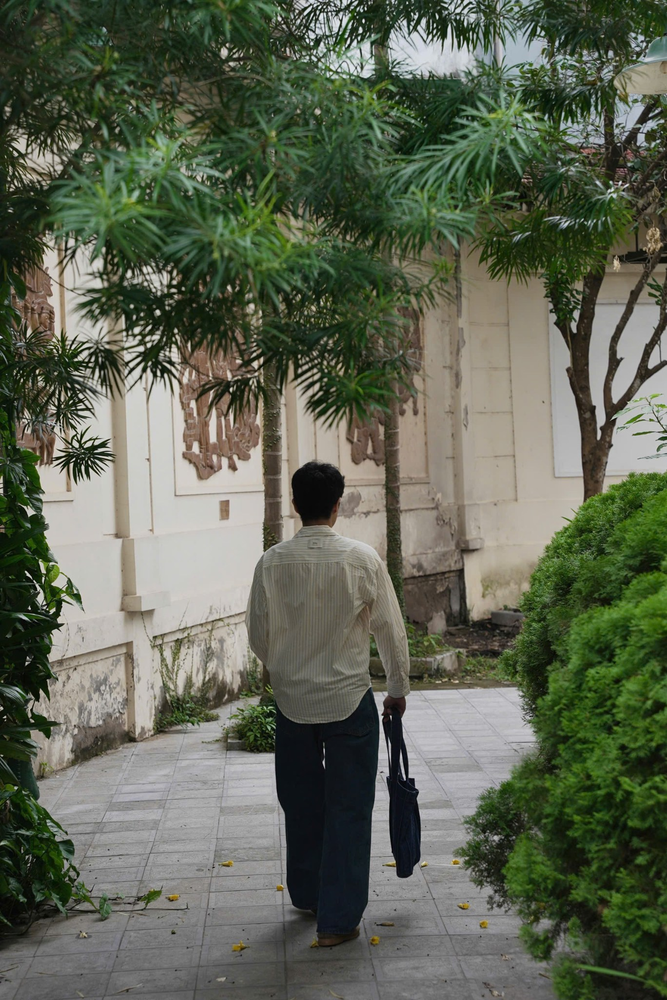
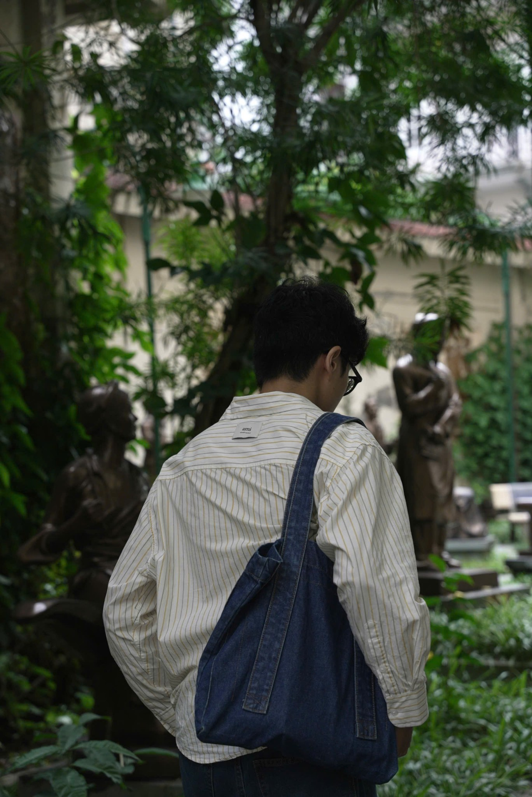
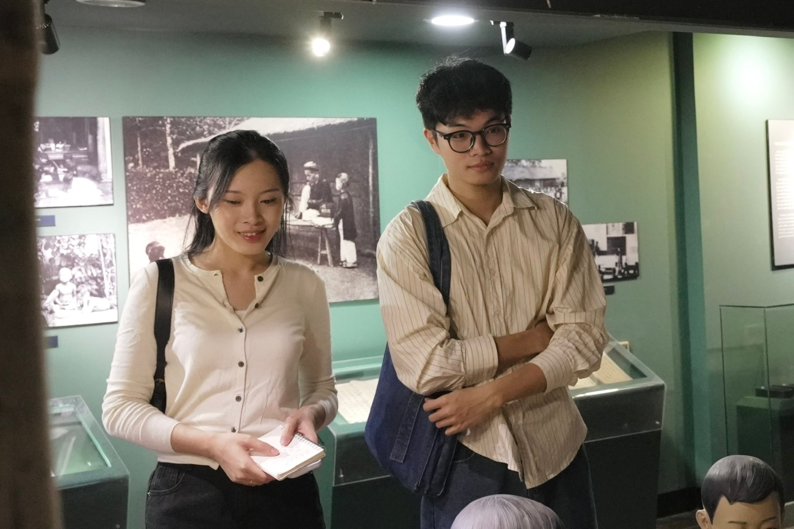
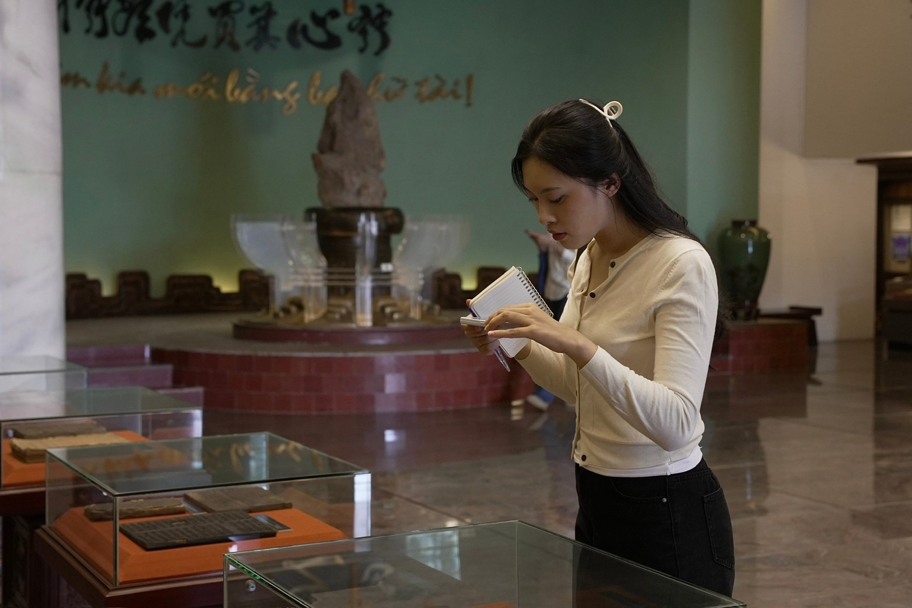
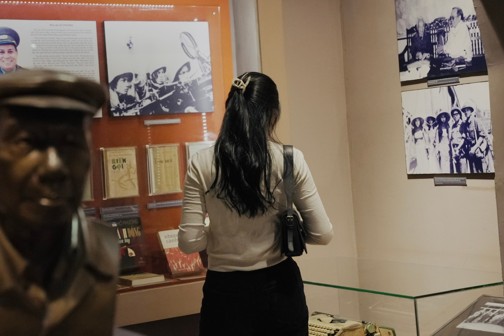

Trong bài
Đi bảo tàng không chỉ là dịp khám phá những giá trị văn hóa, lịch sử mà người trẻ còn có thể lưu lại những bức ảnh mang dấu ấn cá nhân. Tuy nhiên, lựa chọn trang phục thế nào để vừa phù hợp với không gian trưng bày, vừa lên hình đẹp lại là điều khiến không ít người băn khoăn.
Khác với những địa điểm vui chơi ngoài trời, bảo tàng thường có không gian trưng bày mang màu sắc riêng, kết hợp giữa kiến trúc, hiện vật và ánh sáng. Đặc biệt, tại Bảo tàng Văn học Việt Nam, các khu vực triển lãm với gam màu trầm, cầu thang hay khuôn viên xanh mang đến nhiều bối cảnh chụp ảnh khác nhau.
Vì vậy, một “outfit” phù hợp không nhất thiết phải cầu kỳ hay chạy theo xu hướng. Chỉ cần lựa chọn màu sắc, kiểu dáng và phụ kiện hợp lý, người mặc đã có thể sở hữu bộ ảnh ưng ý.
Đơn giản nhưng không đơn điệu
Sơ mi kết hợp quần jeans là công thức phối đồ dễ áp dụng, phù hợp với cả nam và nữ. Những chiếc sơ mi trắng, xanh nhạt hoặc kẻ sọc mang đến vẻ ngoài trẻ trung, trong khi quần jeans ống suông giúp tổng thể thoải mái, tự nhiên.

Với trang phục này, người mặc có thể kết hợp cùng giày sneaker, túi tote hoặc kính mắt để tạo điểm nhấn. Cách phối đặc biệt phù hợp với khu vực cầu thang kính, nơi ánh sáng tự nhiên giúp tôn lên những gam màu sáng.

Khi chụp ảnh, không cần tạo dáng quá phức tạp. Một khoảnh khắc bước lên cầu thang, quay lưng hoặc nhìn nghiêng cũng đủ tạo nên khung hình mang phong cách đời thường.
Outfit vintage: Một chút hoài cổ giữa không gian văn chương
Nếu yêu thích vẻ đẹp cổ điển, phong cách vintage là lựa chọn đáng cân nhắc. Áo cardigan, sơ mi cổ điển, chân váy dài hoặc quần vải ống rộng là những món đồ dễ kết hợp. Các gam màu như nâu, be, kem hay xanh giúp “outfit” hài hòa với những tủ trưng bày màu cam đất và ánh đèn vàng tại bảo tàng.
Một chiếc túi da nhỏ, đồng hồ dây da hoặc kính gọng mảnh có thể bổ sung điểm nhấn vừa đủ. Những món phụ kiện đơn giản này cũng góp phần tạo nên bộ trang phục có cá tính riêng.

Outfit nhẹ nhàng với chân váy dài hoặc quần vải
Những ai yêu thích vẻ ngoài thanh lịch có thể lựa chọn áo cardigan, áo len mỏng kết hợp chân váy midi hoặc quần vải ống suông. Ưu điểm của bộ này là dễ di chuyển trong suốt thời gian tham quan mà vẫn giữ được sự chỉn chu. Các chất liệu mềm, ít nhăn cùng gam màu trung tính cũng giúp trang phục lên hình hài hòa.

Tại khu vực trưng bày trong nhà, những bộ trang phục check-in mang màu trắng kem, nâu nhạt hoặc xanh pastel sẽ rất phù hợp với gam màu trầm của không gian. Một bức ảnh chụp từ phía sau khi đang đứng ngắm hiện vật, hoặc ngồi nghỉ trên ghế với dáng vẻ thư thái, là gợi ý phù hợp cho những ai yêu thích phong cách chụp ảnh tự nhiên, không cần tạo dáng cầu kỳ.

Lưu ý khi lựa chọn “outfit” đi bảo tàng
Dù ưu tiên phong cách nào, yếu tố thoải mái vẫn nên được đặt lên hàng đầu. Một chuyến tham quan có thể kéo dài vài giờ, đòi hỏi di chuyển qua nhiều khu trưng bày và cầu thang. Vì vậy, khi phối đồ, nên ưu tiên giày dễ đi, trang phục lịch sự và hạn chế phụ kiện gây vướng víu. Người tham quan cũng cần lưu ý quy định của bảo tàng khi chụp ảnh, tránh sử dụng đạo cụ hoặc tạo dáng gây ảnh hưởng đến hiện vật và người xung quanh.
Đôi khi, sự đơn giản và phù hợp với bản thân lại là yếu tố giúp bức ảnh lưu giữ được cảm xúc tự nhiên nhất.
Bảo tàng Văn học Việt Nam